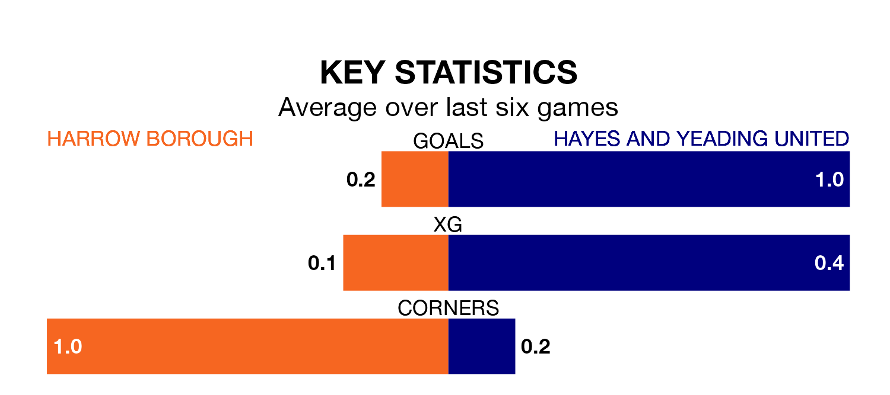

Saturday's match at the Earlsmead Stadium sees two relegation candidates play each other, as bottom of the table Harrow Borough host 20th-placed Hayes and Yeading United.
Harrow have picked up 14 points from their first 14 Southern League Premier – South games, with three wins and five draws.
That is nine points less than Hayes & Yeading have collected, having won five and drawn eight.
Harrow are in awful form in Southern League Premier South, with no wins and six losses from their last six games.
With no wins and three draws over that period, Hayes & Yeading's form is better – they have taken three points from 18, compared to Borough's zero.
In the last 10 years, Harrow and Hayes & Yeading have played each other on six occasions. Harrow won one of them, Hayes & Yeading four, and they drew once.
On average, Harrow scored 1.2 goals and Hayes & Yeading 2.0 in those matches.
Their last meeting was on September 26, when Hayes & Yeading won 3-0 at home.
With 30 goals in 26 games so far this season, the hosts are the league's second-lowest scorers with 1.2 goals per game. And they are conceding more than average, letting in 63 goals at a rate of 2.4 per game.
United are also below average scorers, with 1.5 goals per game, compared to a league average of 1.7. They have conceded 1.7 goals per game.
Harrow's last match was on January 20, a 1-0 loss against AFC Totton.
Hayes & Yeading lost 2-0 against Plymouth Parkway last time out, on Tuesday.
Updated: 08:51 (UTC), 25/01/24